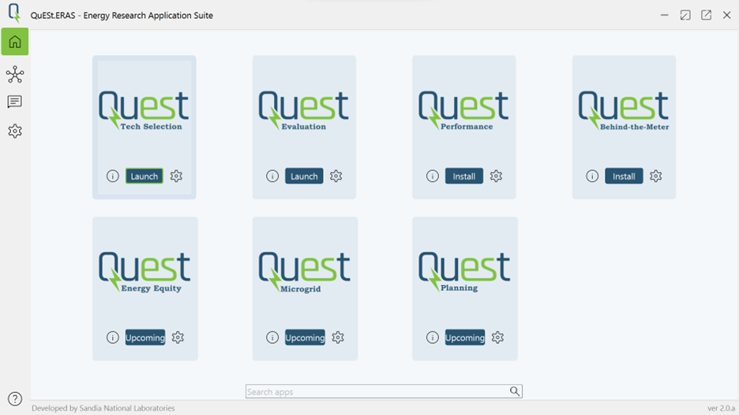

QuESt 2.0: Open-source Platform for Energy Storage Analytics
Current release version: 2.0
Release date: March, 2024
Contact
For issues and feedback we would appreciate it if you could use the “Issues” feature of this repository. This helps others join the discussion and helps us keep track of and document issues.
Email: Project maintainer (Tu Nguyen) @sandia.gov: tunguy
Code Documentation:
Introduction
QuESt 2.0 is an evolved version of the original QuESt, an open-source Python software designed for energy storage (ES) analytics. It transforms into a platform providing centralized access to multiple tools and improved data analytics, aiming to simplify ES analysis and democratize access to these tools.
{kind=link}
Currently, QuESt 2.0 includes three main components:
The App Hub
The QuESt App Hub operates similarly to an app store, offering access points to a multitude of applications. Currently, various energy storage analytics tools have been available on QuESt App hub. For example:
QuESt Data Manager manages the acquisition of data.
QuESt Valuation estimates the potential revenue generated by energy storage systems when providing ancillary services in the electricity markets.
QuESt BTM (Behind-The-Meter) calculates the cost savings for time-of-use and net energy metering customers utilizing behind-the-meter energy storage systems.
QuESt Technology Selection supports in selecting the appropriate energy storage technology based on specific applications and requirements.
QuESt Performance evaluates the performance of energy storage systems in different climatic conditions.
QuESt Microgrid supports microgrid design and simulation considering energy storage as a key component.
It has been designed with key features to improve user experience and application management:
User-Friendly Access: Users can easily find and install applications that suit their specific needs.
Isolated Environments: Upon installation, each application creates an isolated environment. This ensures that applications run independently, preventing conflicts, and enhancing stability.
Simultaneous Operation: Multiple applications can be installed and operated simultaneously, allowing users to leverage different tools without interference.
The Workspace
The QuESt Workspace provides an integrated environment where users can create workflows by assembling multiple applications into a coherent process. It enhances the platform’s usability and efficiency through several mechanisms:
Integration of Applications: Users can create work processes that integrate multiple apps by assembling pipelines using plugin extensions. This modular approach allows for the flexible composition of analytics workflows tailored to specific needs.
Workflow Management: The workspace supports the selection, assembly, connection, and post-processing of data and tools. This structured approach streamlines the analytics process, from data preparation to visualization, making it easier to manage and understand.
QuESt GPT
QuESt GPT represents a leap forward in data analytics within the platform, utilizing generative AI (specifically Large Language Models, or LLM) for data characterization and visualization:
Data Insights: Users can select datasets and ask questions about the data, with QuESt GPT providing insights based on the data’s characteristics. This interaction model simplifies complex data analysis, making it accessible to users without deep technical expertise.
Utilization of LLMs: By leveraging advanced open-source LLMs such as OpenAi’s GPT-4 and Meta’s Llama2, QuESt GPT can perform sophisticated data analytics tasks, such as characterizing and visualizing large datasets. This enables users to gain deeper insights from their data, supporting more informed decision-making at no costs.
What are the key innovations of QuESt 2.0?
QuESt 2.0 facilitates the advancement of energy storage technology by making powerful analytics tools accessible to all energy storage stakeholders, aligning with DOE’s energy storage program goals. The platform standardizes data and program structures, integrates applications seamlessly, and utilizes generative AI for advanced analytics, simplifying user interaction and enabling deeper insights from diverse data sources. This positions QuESt 2.0 as a pioneering platform in the energy storage domain, with the potential to significantly impact both the field and the broader energy landscape. Specifically, the key innovations of QuESt 2.0 include:
Integration and Usability: At its core, QuESt 2.0 revolutionizes how energy storage analytics are performed by providing a seamless, user-friendly platform that integrates multiple applications developed by independent developers. This allows for a more cohesive and efficient user experience, significantly lowering the learning curve for users at various levels of expertise.
AI-powered Data Analytics: The incorporation of QuESt GPT, utilizing Large Language Models (LLM), represents a significant technological leap forward. This feature enables users to perform more sophisticated data analytics, providing deeper insights from diverse data sources. It allows users to interact with data in an intuitive way, asking questions and receiving insights, which democratizes access to complex data analysis.
Complex Workflows: The QuESt Workspace and the QuESt App Hub enhance the platform’s capability to support complex analytical workflows. Users can integrate multiple applications into a single process, creating efficient pipelines for data analysis. The users can run their workflows locally or schedule them to run on cloud services (e.g., AWS, Azure..)
How is QuESt 2.0 different from the other tools in Energy Storage Analytics?
QuESt 2.0 distinguishes itself in the crowded space of energy storage analytics tools by offering a unified platform rather than a collection of individual tools. While there are numerous tools available, these tend to focus on specific aspects of energy storage analysis and lack the integration and broad applicability that QuESt 2.0 provides.
Key Competitive Advantages of QuESt 2.0:
Unified Platform: Unlike individual tools that offer limited capabilities in specific topics, QuESt 2.0 serves as a comprehensive platform that integrates multiple applications for energy storage analytics. This integration allows users to access a wide range of tools and functionalities within a single environment, streamlining the workflow and enhancing productivity.
Advanced Data Analytics: With the inclusion of QuESt GPT for advanced data analytics, QuESt 2.0 utilizes generative AI to provide deeper insights from diverse data sources. This capability is not commonly found in other tools, giving QuESt 2.0 a significant technological edge.
Flexibility and Scalability: QuESt 2.0’s modular design allows for the easy integration of new tools and applications, ensuring that the platform remains relevant and adaptable to future developments in energy storage analytics.
Collaborative Development: As an open-source platform, QuESt 2.0 benefits from contributions by a wide community of developers, enhancing its capabilities and ensuring continuous improvement.
How to download QuESt?
QuESt is currently available on Github at: https://github.com/sandialabs/snl-quest.
Installation Instructions for QuESt
Prerequisites
Python (3.9.x recommended) installed on your system
Git installed on your system
Installing Python
Go to python.org.
Download a version of Python suitable for your operating system (3.9.x recommended).
Follow the installation instructions provided on the website.
Installing Git
Visit git-scm.com to download Git for your operating system.
Follow the installation instructions provided on the website.
Setting Up a Virtual Environment
- Install virtualenv (if not already installed):
pip install virtualenv
- Create a virtual environment:
virtualenv env
Activate the virtual environment: - On Windows:
.\env\Scripts\activate
On Linux/macOS: .. code-block:: bash
source env/bin/activate
Installing QuESt
- Clone the Repository:
git clone <repository_url>
Replace <repository_url> with the URL of the QuESt GitHub repository.
- Navigate to the QuESt Directory:
cd <repository_name>
Replace <repository_name> with the name of the directory where QuESt was cloned.
- Install Dependencies:
pip install .
Running QuESt
- Run QuESt:
- Once the dependencies are installed, ensure you have navigated to the directory where QuESt is installed and the virtual environment is activated. You can run QuESt using the following command:
- On Windows:
python -m quest
- On Linux/macOS:
python3 -m quest
- Alternatively, after running pip install ., you can run QuESt from any location as long as the virtual environment QuESt is downloaded in is activated using the following command:
quest
Deactivating the Virtual Environment
- Deactivate the Virtual Environment:
deactivate
This will return you to your system’s default Python environment.
References
Nguyen, Tu A., David A. Copp, and Raymond H. Byrne. “Stacking Revenue of Energy Storage System from Resilience, T&D Deferral and Arbitrage.” 2019 IEEE Power & Energy Society General Meeting (PESGM). IEEE, 2019.
Byrne, Raymond H., Tu A. Nguyen, and Ricky J. Concepcion. “Opportunities for Energy Storage in CAISO.” 2018 IEEE Power & Energy Society General Meeting (PESGM). IEEE, 2018. Available online.
Byrne, Raymond H., Tu Anh Nguyen, and Ricky James Concepcion. Opportunities for Energy Storage in CAISO. No. SAND2018-5272C. Sandia National Lab.(SNL-NM), Albuquerque, NM (United States), 2018. Available online.
Concepcion, Ricky J., Felipe Wilches-Bernal, and Raymond H. Byrne. “Revenue Opportunities for Electric Storage Resources in the Southwest Power Pool Integrated Marketplace.” 2018 IEEE Power & Energy Society General Meeting (PESGM). IEEE, 2018. Available online.
Wilches-Bernal, Felipe, Ricky J. Concepcion, and Raymond H. Byrne. “Electrical Energy Storage Participation in the NYISO Electricity and Frequency Regulation Markets.” 2018 IEEE Power & Energy Society General Meeting (PESGM). IEEE, 2018.
Nguyen, Tu A., and Raymond H. Byrne. “Maximizing the cost-savings for time-of-use and net-metering customers using behind-the-meter energy storage systems.” 2017 North American Power Symposium (NAPS). IEEE, 2017. Available online.
Nguyen, Tu A., et al. “Maximizing revenue from electrical energy storage in MISO energy & frequency regulation markets.” 2017 IEEE Power & Energy Society General Meeting. IEEE, 2017. Available online.
Byrne, Raymond H., Ricky J. Concepcion, and César A. Silva-Monroy. “Estimating potential revenue from electrical energy storage in PJM.” 2016 IEEE Power and Energy Society General Meeting (PESGM). IEEE, 2016. Available online.
Byrne, Raymond H., et al. “The value proposition for energy storage at the Sterling Municipal Light Department.” 2017 IEEE Power & Energy Society General Meeting. IEEE, 2017. Available online.
Byrne, Raymond H., et al. “Energy management and optimization methods for grid energy storage systems.” IEEE Access 6 (2017): 13231-13260. Available online.
Byrne, Raymond H., and César A. Silva-Monroy. “Potential revenue from electrical energy storage in ERCOT: The impact of location and recent trends.” 2015 IEEE Power & Energy Society General Meeting. IEEE, 2015. Available online.